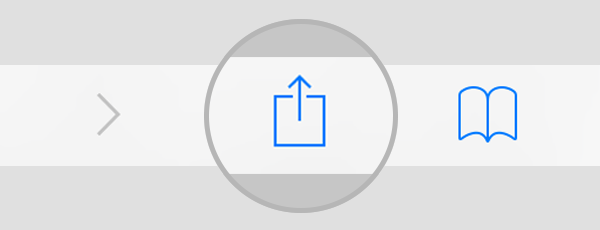

It appears you are on an iOS device...
If you want to use this page as an app, press this beauty (on Safari):
 and select "add to home-screen".
query radius
track_changes
{{queryRadius}}
sort
inbox
{{news.label}}
{{news.title}}
{{news.source}}
{{news.content}}
Entfernung {{news.dist}} m
{{news.linkCta}}
Featured Stories
Was sonst noch in HH?
https://www.urbanstories.info/